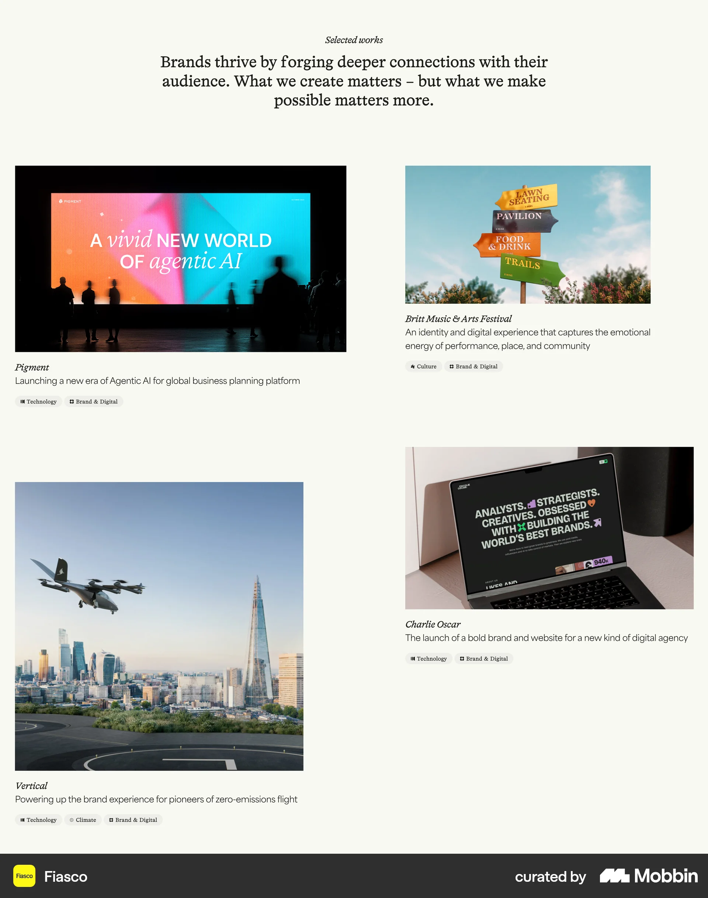
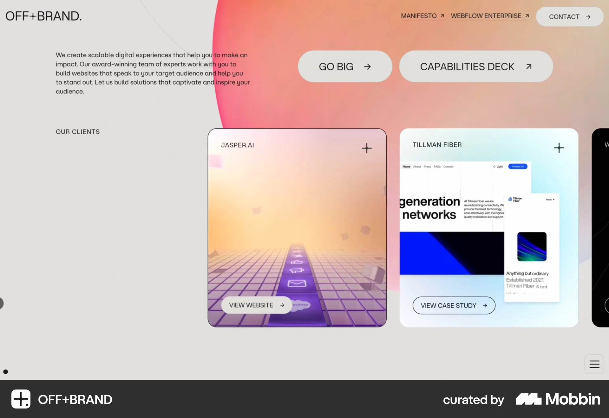
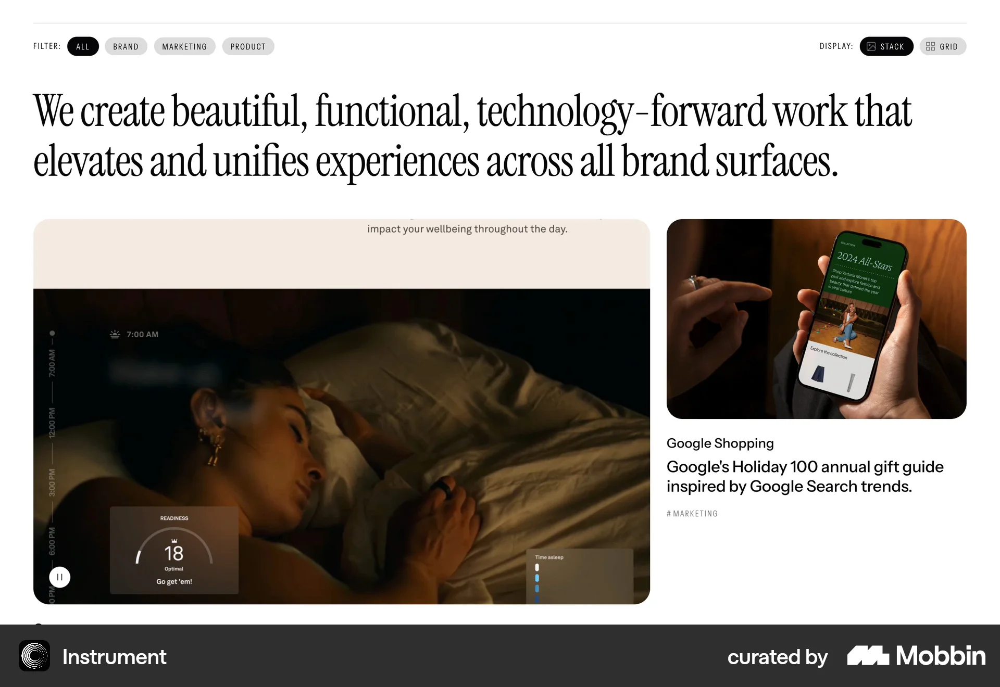
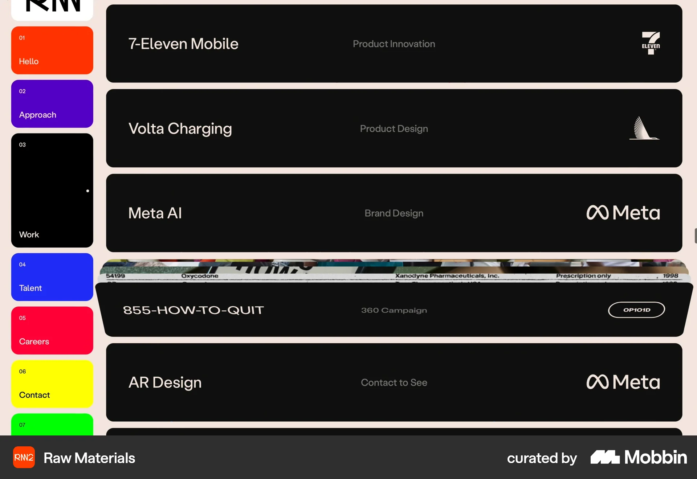
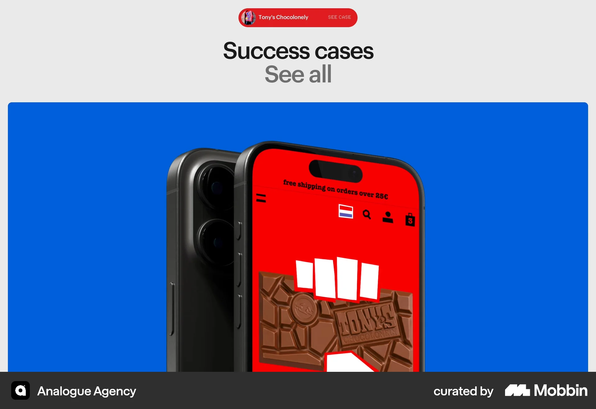

Homepage project presentation
6 studio work references
These work previews and collection sections show different ways to pair visual quality with enough information to identify a project. Collection patterns are labelled in their notes.
Fiasco
Selected work section

Visible pattern Unequal image sizes form a staggered two-column composition. Names, brief explanations and discipline labels stay beside each visual.
Use for Moriz Keep a one-sentence product explanation with every cover. Visual variety can come from image scale while the text structure stays consistent.
Tradeoff Offsets can lengthen the section and complicate reading order. Replacing the current stacked panels is a separate design choice.
Open reference on Mobbin ↗Cloudstudio
Selected work section

Visible pattern A large Selected work heading precedes adjacent interface tiles with names and small metadata over the lower edge.
Use for Moriz Use actual interface imagery so visitors can identify the kind of product before opening the project.
Tradeoff The dark treatment obscures UI details. Keep essential names and descriptions outside busy images.
Open reference on Mobbin ↗OFF+BRAND
Client project cards

Visible pattern Named cards contain a project preview and a visible action. One says View website and another says View case study.
Use for Moriz Distinguish opening the studio's case study from visiting the client's live product. Use precise action labels.
Tradeoff The horizontal row leaves later cards partly outside the viewport. Keep all three Moriz projects discoverable through vertical scrolling.
Open reference on Mobbin ↗Instrument
Work collection section

Visible pattern A large statement sits over an asymmetric project pairing. The smaller project includes a client name, explanation and discipline label; Stack and Grid controls are visible.
Use for Moriz Give a project a prominent visual and preserve a useful caption. Deliberate scale can communicate priority once a lead project is chosen.
Tradeoff This is a collection reference, not proof of homepage behavior. Filters and layout switches would add little to three projects.
Open reference on Mobbin ↗Raw Materials
Work index section

Visible pattern Dark horizontal rows pair client or project names with discipline labels and marks. One row includes a narrow band of imagery.
Use for Moriz An index can explain scope with very little imagery. It is a credible fallback while real visual assets are being prepared.
Tradeoff Most work is not pictured in the capture. Hover, expansion and transitions cannot be inferred from the still.
Open reference on Mobbin ↗Analogue Agency
Featured case teaser

Visible pattern A Success cases heading and case action sit above a large device visual. One project dominates the section.
Use for Moriz A single readable screen can be a stronger cover than a collage of many tiny screens.
Tradeoff A featured stage requires a deliberate lead project and strong assets. The still does not establish carousel behavior.
Open reference on Mobbin ↗